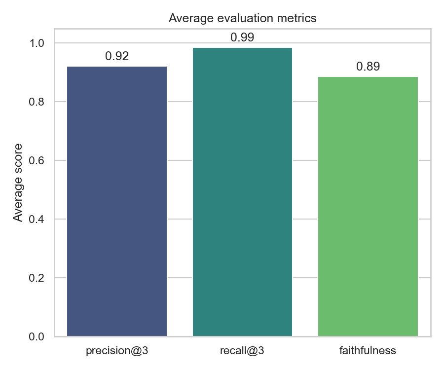

Système RAG
sur les concepts NLP / ML
Un pipeline de Retrieval-Augmented Generation interrogeant un corpus de 34 articles Wikipédia (Transformers, BERT, Word2vec, RAG, évaluation…) via ChromaDB, SentenceTransformers et Llama 3.3 (Groq).
Plan de la présentation
Huit étapes pour comprendre comment le système transforme une question en réponse fiable et sourcée.
La vue d'ensemble — pourquoi associer recherche et génération.
Organisation des fichiers et des deux pipelines (offline / online).
Les bibliothèques clés et leur rôle.
36 articles Wikipédia récupérés automatiquement.
1443 passages prêts à être indexés.
Embeddings MiniLM + ChromaDB + Groq.
Chat, évaluation et gestion du corpus.
Résultats chiffrés, limites et pistes d'amélioration.
Le RAG en une image
Plutôt que de faire confiance à la mémoire du LLM, on lui fournit les 3 passages les plus pertinents trouvés dans le corpus, puis on lui demande de répondre uniquement à partir de ces extraits.
Articles Wikipédia
36 pages sur l'IA / NLP
Nettoyage & découpage
1443 chunks de 512 car.
Embeddings
all-MiniLM-L6-v2 (384-d)
Index ChromaDB
Collection nlp_corpus
Question
Posée par l'utilisateur
Embedding
Même modèle MiniLM
Top-3 chunks
Recherche par similarité
Groq LLM
Llama 3.3 70B
Réponse
Sourcée & vérifiable
Organisation du dépôt
Chaque phase du pipeline correspond à un script dédié — un flux clair, de la donnée brute jusqu'au rapport.
config.py — source unique de vérité
Taille de chunk, overlap, modèle d'embedding, top-k, modèle Groq : tous les autres fichiers importent ces constantes — aucune valeur magique dupliquée.
Deux pipelines complémentaires
Hors-ligne (une fois) : collecte → nettoyage → indexation. En ligne (à chaque question) : embedding → recherche → prompt → LLM.
Évaluation reproductible
34 questions avec sources attendues → results.csv → 5 graphiques
→ intégrés au rapport LaTeX.
Outils & bibliothèques
Des choix simples, locaux et reproductibles — sans infrastructure complexe.
SentenceTransformers
all-MiniLM-L6-v2 — 80 Mo, embeddings 384-d, rapide sur CPU. Même modèle pour l'indexation et les requêtes.
ChromaDB
Base vectorielle persistante locale, recherche par plus proches voisins (HNSW), zéro serveur à gérer.
Groq + Llama 3.3 70B
Inférence LPU ultra-rapide (≈0,8 s/réponse), API compatible OpenAI, palier gratuit généreux.
Streamlit
Interface web complète (chat, évaluation, gestion du corpus) sans HTML/JS — widgets & cache intégrés.
Pandas / Matplotlib / Seaborn
Tableaux de résultats et graphiques statiques pour le rapport LaTeX.
Plotly
Graphiques interactifs (zoom, survol) dans l'onglet Évaluation de l'app Streamlit.
PyMuPDF (fitz)
Extraction de texte depuis des PDF uploadés — ajout de nouveaux documents au corpus.
python-dotenv
Charge GROQ_API_KEY depuis .env — clé jamais versionnée dans Git.
Collecte du corpus Wikipédia
Un script va chercher 36 articles sur l'IA/NLP et les enregistre en texte brut dans data/raw/.
Transformer, BERT, GPT, Word2vec, TF-IDF, BLEU, ROUGE, RAG, LangChain, base vectorielle…
action=query&prop=extracts&explaintext=True → texte brut de l'article.Délai de 2 s entre requêtes, gestion du HTTP 429, jusqu'à 5 réessais avec backoff exponentiel.
Un échec est journalisé (
FAILED) et n'interrompt pas le traitement des autres articles.def fetch_article(title):
# appelle l'API Wikipédia
# retry: 2**attempt * 2 sec
# gère HTTP 429 (Retry-After)
return texte_brut
# boucle principale
for title in ARTICLES:
text = fetch_article(title)
save(f"data/raw/{title}.txt")
sleep(2.0) # politesse
data/raw/ est gitignored — pour reconstruire le corpus :
relancer ce script, ou repartir directement de chunks.jsonl déjà versionné.Nettoyage & découpage en chunks
On élimine le bruit, puis on découpe chaque article en passages de taille fixe — comme transformer un livre en flashcards.
1. Filtrage des pages
BM25.txt et Tokenization.txt sont des pages d'homonymie Wikipédia
(sans contenu réel) → exclues. 34 documents utiles restent (> minimum de 30).
2. Suppression de sections
Sections See also, References, Further reading,
External links, Notes détectées via == Titre == et supprimées.
3. Découpage glissant
Fenêtre de 512 caractères avec chevauchement de 50 — évite de couper une phrase clé exactement à la frontière entre deux chunks.
"text": "BERT is designed to..."}
Embeddings & index vectoriel
Chaque chunk devient un vecteur de 384 nombres qui capture son sens — comme une coordonnée GPS sur une "carte du sens".
chunks = load_chunks("chunks.jsonl")
# 2. Encoder en vecteurs 384-d
model = SentenceTransformer("all-MiniLM-L6-v2")
embeddings = model.encode(texts, batch_size=64)
# 3. (Re)créer la collection ChromaDB
client = PersistentClient("chroma_db/")
collection = client.create_collection("nlp_corpus")
# 4. Stocker id + embedding + texte + source
collection.add(ids, embeddings, documents, metadatas)
1443 × 384 vecteurs
Encodage par lots de 64 avec barre de progression — quelques minutes sur CPU.
Suppression & recréation
La collection nlp_corpus est supprimée puis recréée à chaque exécution —
garantit qu'elle correspond exactement à chunks.jsonl, sans doublons.
Vérification automatique
Une requête test ("What is attention in machine learning?") affiche les 3 chunks les plus proches — pour confirmer que l'index a du sens avant de continuer.
chroma_db/ est gitignored : 100% reproductible depuis
chunks.jsonl via python -m src.build_index.Récupération & génération
Le "cerveau" du projet : transformer la question, retrouver les passages pertinents, puis demander au LLM de répondre uniquement à partir d'eux.
Même modèle MiniLM → vecteur 384-d, comparable aux chunks indexés.
collection.query(query_embeddings, n_results=3) → top-3 chunks (id, texte, source).Assemble les chunks dans un gabarit anti-hallucination strict.
Appel à
groq.chat.completions.create(model="llama-3.3-70b-versatile", ...)."""Answer the question using only the
context below. If the context does not
contain the answer, say you don't know.
Context:
{context}
Question: {question}
Answer:"""
Une seule source de vérité
Comme le menu d'options d'un jeu vidéo : tous les scripts lisent leurs paramètres ici — rien n'est jamais redéfini ailleurs.
CHUNK_OVERLAP = 50
EMBEDDING_MODEL = "all-MiniLM-L6-v2"
TOP_K = 3
GROQ_MODEL = "llama-3.3-70b-versatile"
CHUNK_SIZE = 512 / OVERLAP = 50
≈ deux phrases : assez ciblé pour la précision, assez large pour le contexte. L'overlap évite de couper une idée en deux.
EMBEDDING_MODEL
Utilisé à l'identique pour l'indexation et les requêtes — cohérence indispensable des espaces vectoriels.
TOP_K = 3
Équilibre entre contexte suffisant pour le LLM et taille du prompt / latence / bruit.
CHUNK_SIZE impose de relancer prepare_data.py et
build_index.py — faisable aussi depuis l'onglet "Corpus Management" de l'app.Application Streamlit
Trois onglets pour discuter avec le corpus, mesurer la qualité du système, et gérer les documents — sans terminal.
Onglet Chat
Pose une question, récupère une réponse avec badges (temps, nb. de chunks, fidélité) et un panneau listant les sources utilisées avec leur score de similarité.
Onglet Évaluation
Charge un jeu de questions, lance l'évaluation, visualise précision/rappel/fidélité par graphiques Plotly interactifs, exporte CSV ou PDF.
Onglet Corpus Management
Ajoute des documents (PDF/TXT), relance le découpage, sélectionne les sources à indexer, et reconstruit l'index ChromaDB en un clic.
Barre latérale
Sélection du modèle LLM, curseurs top_k (1–10) et seuil de similarité
(0–1), état de l'index, statut de la clé API Groq.
Seuil de similarité
similarity = 1 / (1 + distance) — convertit la distance ChromaDB
(0 = identique) en score borné (0,1] pour filtrer les chunks peu pertinents.
Méthodologie d'évaluation
34 questions, chacune associée à un ou plusieurs documents "attendus" — quatre métriques mesurent la qualité bout-en-bout.
Precision@3
relevant / retrieved — parmi les 3 chunks récupérés, quelle fraction
provient d'un document attendu ?
Recall@3
|relevant docs| / |expected docs| — le document attendu figure-t-il
parmi les chunks récupérés ?
Faithfulness (fidélité)
|mots réponse ∩ mots contexte| / |mots réponse| — la réponse
réutilise-t-elle le vocabulaire du contexte fourni ? Proxy lexical de l'ancrage.
Temps de réponse
Mesuré via time.perf_counter() — de la requête à la réponse complète du LLM.
Performance du système
Moyennes obtenues sur les 34 questions d'évaluation (evaluation/results.csv).
En résumé
La bonne information est presque toujours atteignable (recall élevé), la récupération cible rarement des documents hors-sujet (précision élevée), et les réponses du LLM restent globalement ancrées dans le contexte fourni — avec une latence sub-seconde grâce à Groq.

Limites & perspectives
Un système simple et efficace — avec des axes d'amélioration clairs et assumés.
Découpage par caractères
Simple et déterministe, mais pas conscient des phrases/tokens. Amélioration possible : découpage sémantique.
Fidélité = chevauchement lexical
Une réponse correcte mais reformulée peut obtenir un score bas. Piste : LLM-as-judge.
Pas de re-ranking
Aucune étape de réordonnancement après la recherche. Piste : cross-encoder re-ranker.
Corpus anglophone
Articles Wikipédia en anglais uniquement. Piste : embeddings et corpus multilingues.
Pas de mémoire conversationnelle
Chaque question est traitée indépendamment — pas d'historique injecté dans le prompt.
Précision sur sujets proches
Des thématiques proches (FastText / Word2vec) peuvent faire chuter la précision malgré un bon rappel.
Merci pour votre attention
Un pipeline RAG complet, local et reproductible — de la collecte Wikipédia jusqu'à une réponse sourcée en moins d'une seconde, avec une interface Streamlit interactive pour la démonstration.
34 documents
1443 chunks indexés
92–99%
Précision & rappel @3
≈ 0.8 s
Temps de réponse moyen